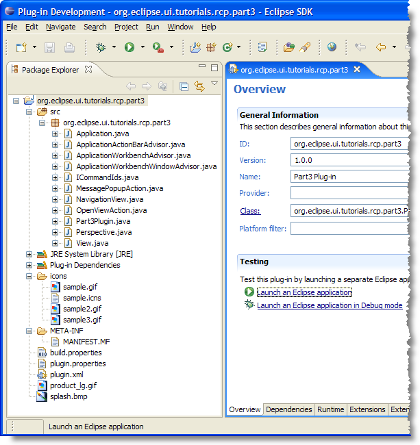
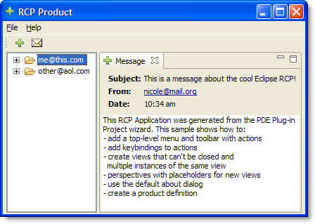
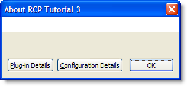
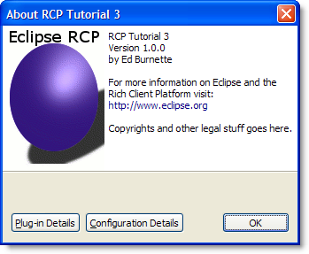

| Eclipse Article |

The Rich Client Platform (RCP) lets you reuse common functionality from the Eclipse IDE in your own applications. Parts 1 and 2 of this tutorial introduced you to the platform with a very simple example that did nothing but open a blank window. Part 3 discusses a more complicated example with menus, views, and other features. This part has been updated for Eclipse 3.1.2
By Ed Burnette, SAS
July 28, 2004
Updated for 3.1.2: February 6, 2006
The previous two parts examined a simple application that demonstrated the basic concepts of the Rich Client Platform (RCP). We used one of the plug-in project templates provided by the Eclipse SDK called "Hello RCP". Now it's time to delve a little deeper into a more complex application. We could add one thing at a time to the simple application, but in practice that's not the best way to do it.
When you're writing these apps yourself, the quickest way is to find a template or other application that is close to the one you want to build and copy that. That's exactly what we'll do here, using a different template called "RCP Mail". By the end of this tutorial you should have the information you need to understand how this sample works so you can adapt it for your own application.
The RCP Mail template is not a functioning mail application but instead is a sample standalone RCP example provided with the Eclipse SDK that demonstrates how to:
As in part 1, to create the example, select File > New > Project, then expand Plug-in Development and double-click Plug-in Project to bring up the Plug-in Project wizard. On the subsequent pages, enter a Project name such as org.eclipse.ui.tutorials.rcp.part3, indicate you want a Java project, select the version of Eclipse you're targetting (at least 3.1), and enable the option to Create an OSGi bundle manifest. Then click Next >.
For the option "Would you like to create a rich client application?". Select Yes. Leave all the other options at their default values. Click Next > to continue.
Enable the option to Create a plug-in using one of the templates, then select the RCP Mail Template. Click Finish to accept all the defaults and generate the project (see Figure 1).
All the source code for this part can be found in the accompanying zip file.

Figure 1. The example generated by the RCP Mail Template can serve as a skeleton for your own RCP application.
Test the application by clicking on "Launch an Eclipse application" from the Plug-in Manifest Editor. If it works you should see the application shown in Figure 2.

Figure 2. The RCP Mail Template can serve as a skeleton for your own RCP application.
RCP Mail has two views, one on the left that shows all your waiting
mail messages, and one on the right that examines a particular mail
message. These views are defined in plugin.xml using the org.eclipse.ui.views
extension point. Listing 1 shows the definition of the Message view.
Listing 1. Message view defined in plugin.xml
<extension
point="org.eclipse.ui.views">
<view
name="Message"
allowMultiple="true"
icon="icons/sample2.gif"
class="org.eclipse.ui.tutorials.rcp.part3.View"
id="org.eclipse.ui.tutorials.rcp.part3.view">
</view>
</extension>
The sample2.gif file is a 16x16 icon in GIF format used for the
view's title bar. The id attribute is just a unique string
that identifies the view. The class attribute specifies the
fully qualified name of your View class (see below). The allowMultiple
option lets you have more than one view of a particular type active at
once. By default, Eclipse would only let you have one.
The View class extends the abstract class org.eclipse.ui.part.ViewPart.
A partial listing is shown in Listing 2. Only the createPartControl()
and setFocus() methods need to be implemented.
Listing 2. View.java
public class View extends ViewPart {Notes:
Defining constants that start with ID_ is a pattern
you'll see used over and over again in the Eclipse source code. Here
we use it to duplicate the same id used in the plug-in manifest. This
will be used later when we need a reference to the view. |
|
The most important part of this class is the createPartControl
method. This is where you will create your JFace or SWT controls that
make up the view. View programming is beyond the scope of this
tutorial but the reference section has some resources you can use to
learn more. |
You may be wondering, how does Eclipse know to put the Mailbox view on the left and the Messages view on the right? That's where the Perspective comes in.
Views (and editors) can only appear in the context of a perspective.
The perspective is defined in plugin.xml with the org.eclipse.ui.perspectives
extension. The initial layout for it (i.e., what parts it starts up
with) is set up in code. Listing 3 shows the layout for the perspective
in the RCP Mail application.
Listing 3. Perspective.java
public class Perspective implements IPerspectiveFactory {Notes:
| Since this example doesn't use editors you turn off the editor area here so you won't have a big blank space in the middle of your Workbench Window. If you have editors, leave this out. | |
| This line adds the Navigation view to the perspective so it will be visible by default. It's a standalone view meaning it can't be docked or stacked with other views, and it doesn't have a title bar. The positioning parameters say to place this view to the left of the editor area and let it take 1/4 of the horizontal space of the Workbench Window. This might be a little strange since we don't have an editor area but it's lurking around somewhere even if it's invisible. | |
Remember when the Messages view was created earlier, it used the allowMultiple="true"
option? This means you can't give a position for "the" Messages view
because there can be more than one. So first, you create a place for
them all to be stacked on top of each other (a folder). Then
you call addPlaceholder() to associate that folder with
the pattern that will match the ids of all Message views. Finally, you
call addView() to add one Message view for demonstration
purposes. In a real application you would probably remember which
messages were previously open and re-open those here when you restart
the program. |
|
| Just for good measure, we make the Navigation view unclosable. We always want our list of mailboxes to be visible. This is covered in more detail below. |
 To
remember the user's layout and window sizes for the next time they start
your application, add
To
remember the user's layout and window sizes for the next time they start
your application, add configurer.setSaveAndRestore(true);
to the initialize() method of WorkbenchAdvisor.
By default, views will be moveable, resizeable, and closable. Often you don't want that flexibility. For example, if you're writing an order entry application for unsophisticated users, you don't want to have to answer help desk questions about what to do if somebody accidentally closes the form view. For this reason the Eclipse platform supports the notion of fixed perspectives and unclosable/unmoveable views.
The RCP Mail example set the Navigation view to be unclosable by
using the setCloseable() method. A better way might be to
use a fixed perspective. A fixed perspective makes all of the views it
contains unclosable, plus it prevents any of them from being moved or
resized. To make a perspective fixed, you could call the setFixed(true)
method on the layout inside createInitialLayout(), or
simply add the fixed="true" attribute to its definition in
plugin.xml.
By using a fixed perspective and turning off the shortcut bar, you can lock the user into one perspective and hide the concept of perspectives from them altogether.
Letting people configure all the menus and toolbars was one of the first, most basic requirement of the Rich Client Platform. There are two ways to add menus and toolbars in an RCP application:
ActionBarAdvisor class in Java code, ororg.eclipse.ui.actionSets extension in the
plug-in manifestExtending ActionBarAdvisor is the only way to reference
built-in Workbench actions, so the example uses that technique (see
Listing 4). If you're trying to use the same code in a stand-alone RCP
application and a plug-in for the Eclipse IDE, the best practice is to
use org.eclipse.ui.actionSets as much as possible.
Actions, commands, menus, and toolbars are undergoing some restructuring in Eclipse 3.2 so this section is likely to change. See bug x for more information.
Listing 4. ApplicationActionBarAdvisor.java
/**Notes:
makeActions() is called by the Platform to create all
the actions that will be referenced in the menus and toolbars.
An action is a simple object that has a user interface component
(i.e., the way it appears in a menu or toolbar) and a functionality
component (i.e., what it does). A list of supported Workbench actions
can be found by looking at the Javadoc for ActionFactory
and ContributionItemFactory. |
|
fillMenuBar() is called to populate the Workbench's
menu bar with whatever actions you would like to have appear there.
The RCP Mail example has two top level menus, "File" and "Help". First
you create a MenuManager for each of the top level menus. Then you add
the menus to the menu bar, and the actions to the menus. See the
references section for more information about defining views and
menus. |
|
fillCoolBar() defines the main coolbar for the
Workbench. A coolbar is a collection of toolbars, and a toolbar
is a collection of actions. In this example there is only one toolbar.
You create a new toolbar manager to hold it, add the toolbar to the
coolbar, and then add the actions to the toolbar. |
It's always a good idea to create some placeholders (like MB_ADDITIONS)
where additional menu items can be added by plug-ins. There are a number
of standard placeholder names for menus and toolbars that you should use
when trying to make yours work just like the ones in the IDE. By using
these predefined groups, plug-ins that contribute menu and toolbar items
to the Eclipse IDE can also contribute them to your RCP application.
These aren't documented anywhere other than in the Javadoc for IWorkbenchActionConstants,
and even there you won't find any guidance for their intended order. The
best reference is the source code for the Eclipse IDE itself.
The RCP Mail template already defines a product using the org.eclipse.core.runtime.products
extension. However it doesn't come with a .products file so
you'll need to make one for full branding and customization. Right click
on the project and select New > Product Configuration. Select
the existing product ID (org.eclipse.ui.tutorials.rcp.part3.product)
and the existing application (org.eclipse.ui.tutorials.rcp.part3.application)
from the dropdown lists. Then provide a Product Name such as RCP
Tutorial 3. Finally, switch to the Configuration tab and add the
plug-ins just like you did in part 1. Save your work and test out
launching the product to make sure it still works that way.
While the application is still running, select Help > About RCP Tutorial 3. You should get a generic dialog that looks like Figure 3.

Figure 3. The standard About box looks like this before branding is applied.
Let's spruce that up a little to demonstrate RCP's branding options. Exit the sample application and switch to the Branding tab of the Product Configuration editor. Find the section that has options for the About Dialog. Next to the Image option click on the Browse button and select product_lg.gif in the plug-in project. This file was put there by the RCP Mail template, but you could easily supply your own. Click OK to continue.
Now click in the Text section and type in whatever you want your About box to say, such as the name of your product, the version number, instructions for getting support, and any necessary copyright and licensing information. When you're done, save the configuration, go back to the Overview tab, click Synchronize, and Launch again. When the application comes up, bring up the About box and you'll see something like Figure 4.

Figure 4. With a branding you can add those little touches that make the application your own.
 Be
sure to include any "extra" files like images and icons in your
plug-in's Build Configuration (the Build tab in the Plug-in Manifest
editor, or the
Be
sure to include any "extra" files like images and icons in your
plug-in's Build Configuration (the Build tab in the Plug-in Manifest
editor, or the build.properties file). Otherwise they won't
make it into the plug-in's jar file or be copied during an Export
operation. The template we used already took care of that, but it's easy
to forget in your own applications.
Congratulations! If you made it this far, you are well on your way to developing your own Rich Client Platform applications. In this part of the tutorial, we picked apart the RCP Mail template to see how it works. Now you can use it as a starting point for your own projects instead of beginning from scratch. Take a look at the references below for more information and community sites where you can discuss RCP with other developers who are using it. All the source code for this part can be found in the accompanying zip file.
RCP Tutorial Part 1
RCP Tutorial Part 2
Eclipse Rich Client
Platform
Creating an Eclipse View
Contributing a Little Help
To discuss or report problems in this article see bug 104171.
IBM is trademark of International Business Machines Corporation in the United States, other countries, or both.
Java and all Java-based trademarks and logos are trademarks or registered trademarks of Sun Microsystems, Inc. in the United States, other countries, or both.
Microsoft and Windows are trademarks of Microsoft Corporation in the United States, other countries, or both.
Other company, product, and service names may be trademarks or service marks of others.